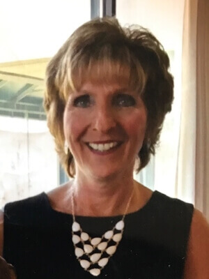
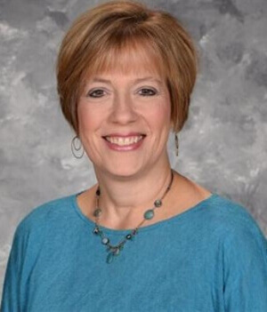
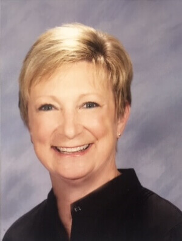
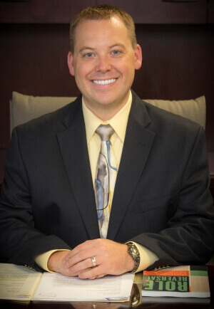

Revere Power Pack Program
a 501(c)3 Organization
Meet Our Board Members
Jennifer G. (“Jill”) OHara President, Treasurer
Jill grew up in Bath and graduated from Revere Schools. She graduated from The University of Akron with a BS in Education.
Children have always been a major focus in her life. Jill recently retired from teaching in the Nordonia Hills City Schools, spending most of the years teaching Kindergarten at Northfield Elementary. She was the Nordonia Hills Educators’ Teacher of the Year in 2006-2007. Jill continues to serve as a volunteer for the kindergarten classrooms at Northfield Elementary and occasionally substitutes there.
She was the Vice-President of Governmental Affairs for the Adam Walsh Child Resource Center when it was located in Cleveland and served as the Board’s Liaison to the Florida Board. She also testified in Columbus for Senate Bill 321, known as the “Ohio Missing Children’s Bill.” She also was a former Sunday School Teacher at Grace United Church of Christ where she currently serves as a member of the consistory.
A long time equestrian, Jill competes with her American Saddlebred and serves on the board of the American Saddlebred Horse Association of Ohio. She has twin children, Kaitlin and Ryan, who graduated from the Revere Schools as well. She lives in Bath with her husband, Brian, and their two dogs.

Vitina D. Bednar, Vice- President/ Assistant Treasurer
Tina is a graduate of The University of Akron. She retired from Akron Public Schools as an elementary teacher after 35 years of service. Her husband’s name is Rick Bednar. They have two sons, Phillip and Steven. They have two grandchildren, Bryce and Taylor.

Renee A. Zumpano, Secretary
Renee Zumpano is a lifelong Akron resident and a graduate of the University of Akron. She is a present member of the Board of Trustees of the Bath Volunteers for Service, and served as President in 2015. Her charitable service has included committees that served the Revere School District, the Homebuilders Association serving Portage and Summit Counties, and Rebuilding Together of Northeast Ohio. She is currently employed by Zumpano Design and Construction.

Julie attended Miami University where she earned her Bachelor’s degree in Elementary Education in December 1990. She began her teaching career in Cincinnati Public Schools where she taught at South Avondale Elementary for 3 1/2 years. In 1994 her family moved to Milwaukee, Wisconsin where she taught 3rd grade at Harambee Community School for one year. Her family moved back to Ohio in 1995 where Julie spent the next 12 years teaching in Stow City Schools at Lakeview Intermediate School. Julie completed her Masters in Administration at the University of Akron in 2005.
Julie M. Gulley, Principal
Julie attended Miami University where she earned her Bachelor’s degree in Elementary Education in December 1990. She began her teaching career in Cincinnati Public Schools where she taught at South Avondale Elementary for 3 1/2 years. In 1994 her family moved to Milwaukee, Wisconsin where she taught 3rd grade at Harambee Community School for one year. Her family moved back to Ohio in 1995 where Julie spent the next 12 years teaching in Stow City Schools at Lakeview Intermediate School. Julie completed her Masters in Administration at the University of Akron in 2005.
Her first administrative position was in Norton City Schools as the principal at Norton Cornerstone Elementary school (K-4) from 2008-2014. Julie was fortunate to join the Revere Local School District in the fall of 2014 as the principal at Hillcrest Elementary. She is also a member of Kid4Kids, the Revere Schools Foundation, and an active member of OAESA and other principal leadership groups. Julie resides with her husband, Richard, son, Thomas and their two dogs in Kent, Ohio.

Seth M. Jentner
Seth Jentner, CFP® is the Director of Operations for Jentner Wealth Management where he manages Jentner’s operational functions, utilizing new technologies to better serve clients. He has extensive experience in process optimization, which he continually applies to enhance the quality of Jentner’s business operations. Seth develops new ways for the Jentner team to communicate with clients and adopts new financial technologies that keep Jentner Wealth Management on the cutting edge. Seth also analyzes client data and serves as an advisor to clients.
Seth received his CERTIFIED FINANCIAL PLANNER™ certification in 2012 and obtained a Master of Business Administration from Indiana University’s Kelley School of Business in 2010. Prior to joining the Jentner team, he worked as an engineer for the Goodyear Tire and Rubber Company throughout Europe and the U.S. He graduated summa cum laude from the University of Akron in 2001 with a Bachelor of Science in chemical engineering and a minor in entrepreneurship. Seth speaks French and German fluently.

Gretchen was the President of Burt Greenwald Chevrolet, Inc. She retired in 2009 after 35 years in the retail automotive industry.
Gretchen G. March
Gretchen was the President of Burt Greenwald Chevrolet, Inc. She retired in 2009 after 35 years in the retail automotive industry.
She has been a resident of Bath Township most of her life. She attended Bath Elementary School and Eastview Junior High, graduating from Revere High School, Class of 1969.
Gretchen studied at Case Western Reserve and graduated from The University of Akron with a B.S.degree in Medical Technology, working in this field in the Chemistry Department at Akron City Hospital (now Summa Systems) before turning her attention and interests towards the family business, Burt Greenwald Chevrolet, Inc.
Her internship in the automotive retail arena began in 1974, as she rotated through the various departments gaining hands-on experience. In 1985 she became the General Manager and by 1988 she assumed the position of dealer/operator.
The business was sold in 2009, marking the beginning of retirement and new opportunities.
She has been married 35 years and she and her husband, Harter, currently live in Bath.
Jason M. Milczewski
Jason has been teaching at Revere High School for 15 years in the Social Studies Department. He is a 2002 graduate of Ohio University where he received a BSED in Integrated Social Studies. In 2012 he was awarded a James Madison Fellowship which allowed him to study American Government and History at Ashland University. In 2015, Jason received a Masters in American Government and History from Ashland. He currently advises the National Honor Society and International Club at Revere High School and looks forward to continuing to support great local causes.

Matt has served as Superintendent of Revere Local Schools since July 2015.